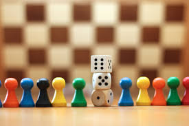

Site Name
Gamers United
Site Purpose with Goals
What are you normal weekend plans? Go out and party or sit at home bored? Just close your eyes and think. You're sitting in your living room alone. It's Friday night and everyone you know is busy you want to stay in and play a game with friends, but alas there is no one to find, so you end up laying down and going to bed early. Cutting what could have been a fun Friday night short. Instead imagine a friendly website where you can post a meeting place, time, and a particular game you'd like to play, and nearby people can sign up and you can all meet new people while enjoying classic board games! You get to meet new friends, play a beloved game, and still enjoy a long fun Friday night! Afraid to meet up in person? That's just fine! We also have options for zoom and discord game nights, and so no matter what you're looking for we can find the perfect option for you! Our purpose is to help people find friends in their local neighborhoods to play board games and do other activities with.
Target Audience
Our Audience are people who are lonely, but are looking to branch out in new and safe ways to meet people in the city they live in, or in cities nearby.
A Logo
Color Scheme
This is used to compliment our picutres and logo to make a more aesthetically pleasing website #0D2149 #208AAE #FCFCFC
Typography
I chose Quicksand, Arial, Helvetica, and sans-serif these are ones I like to work with and I am comfortable using in this project